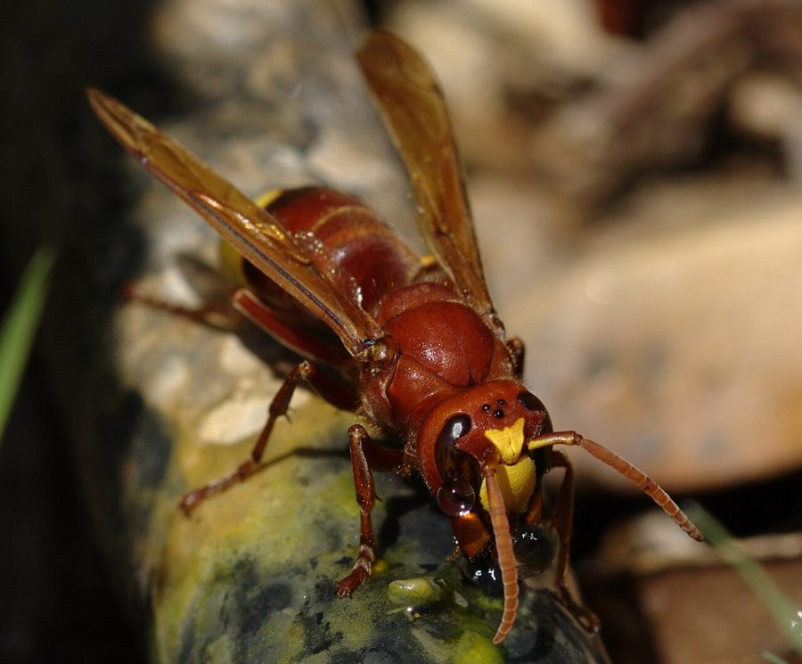

ततैयाOriental Hornet
Vespa orientalis · Vespidae · INS-0177

- Scientific name वैज्ञानिक नाम
- Vespa orientalis Linnaeus, 1771
- Family कुल
- Vespidae
- Hindi हिंदी
- ततैया
- Local names स्थानीय नाम
- tataiya, tatiya, barrai, oriental hornet
- Status here यहाँ की स्थिति
- native
- Movement आवागमन
- Resident, here all year
- Known from कहाँ दर्ज
- Others have published records from the Basti–Ayodhya districts बस्ती–अयोध्या के ज़िलों से दूसरों के प्रकाशित अभिलेख
- IUCN IUCN
- not evaluated
- Review समीक्षा
- audited and independently read
When to look कब देखें
Present all year. साल भर मौजूद।
Tell it apart from इनसे अलग पहचानें
ततैया / Oriental Hornet
Vespa orientalis Linnaeus, 1771 — Vespidae
ततैया — बड़ी, पीले और काले धारियों वाली खतरनाक ततैया। उसका दंश दर्दनाक होता है। घरों की दीवार, पेड़ों की खोल, मकान के किनारों पर बड़ी कागजी घोंसलें बनाती है। मई से अक्टूबर तक ये सक्रिय होती है। देशभर में पाई जाती है। मृत जानवर, सड़े फल खाती है।
Quick Identification त्वरित पहचान
| Feature | Description |
|---|---|
| Size | Worker 18–25 mm; queen 25–35 mm |
| Colour | Yellow and black stripes; abdomen yellow with dark bands |
| Body | Robust, smooth; bare of long hairs |
| Wings | Clear, smoky; held parallel to body at rest |
| Head | Large, with large compound eyes |
| Sting | Visible; smooth, can sting multiple times |
| Nest | Large, papery, grey or brown, open or enclosed |
Field tip: Large, robust wasp with yellow and black bands. Solitary or in small groups around flowers, fruit, and carrion. The nest is a distinctive papery structure, often with exposed hexagonal cells. Very aggressive when defending the nest; the sting is painful and can cause swelling. Multiple stings are dangerous, especially for people with allergies.
हिंदी — कैसे पहचानें: बड़ी ततैया, पीले-काली धारियाँ। मर गए जानवर और सड़े फल पर बैठी रहती है। दंश बहुत दर्दनाक है। घोंसली में बहुत आक्रामक हो जाती है।
Morphology आकारिकी
Biometrics:
| Measurement | Range |
|---|---|
| Worker body length | 18–25 mm |
| Queen body length | 25–35 mm |
| Wingspan | 40–50 mm |
| Sting length | 3–4 mm |
Worker: Large, robust wasp. Head is large with large compound eyes set forward. Thorax is broad and muscular. Abdomen is heavily banded with yellow and black. The legs are relatively long and thin. Wings are clear with a smoky tint. The sting is visible at the tip of the abdomen and is smooth, allowing repeated stinging.
Queen: Noticeably larger than workers (25–35 mm). Similar colour pattern but more robust. Visible ovipositor.
Male: Winged, dark, produced in small numbers late in the season.
Behaviour & Ecology व्यवहार और पारिस्थितिकता
A social, colonial hornet found across tropical and subtropical Asia. Colonies are founded by overwintered queens in spring. The queen selects a sheltered site (often on buildings, under eaves, or in tree cavities) and begins construction of the papery nest. Workers emerge within weeks and take over colony duties. By mid-summer, a mature colony contains 200–500 workers. In autumn, males and new queens are produced. Males mate with new queens, which then overwinter in protected sites.
The species is strongly carnivorous, hunting flies and other insects to feed larvae. Adults also feed on honeydew, fermented fruit, and carrion. Colonies are highly aggressive when defending the nest and will chase intruders. Sting venom causes immediate pain and swelling. Deaths from Oriental Hornet stings are rare but can occur, particularly if the person is allergic or receives multiple stings.
The species also provides pollination services to some flowers, particularly those that reward with nectar or pollen.
हिंदी: मई से निकल आती है। पूरी गर्मी में सक्रिय रहती है। घोंसली से दूर नहीं जाती, पर अगर दंश मार जाए तो बहुत दर्द होता है।
Life Cycle / Phenology जीवन चक्र
| Stage | Duration |
|---|---|
| Egg | 3 days |
| Larva | 10–12 days |
| Pupa | 12–14 days |
| Worker lifespan | 4–6 weeks |
| Queen lifespan | 10–12 months |
| Egg-to-worker | 25–29 days |
Annual cycle:
- Spring (March–April): Overwintered queens emerge and establish new nests
- Summer (May–August): Worker production peaks; colonies grow rapidly
- Autumn (September–October): Males and new queens are produced; preparation for dormancy
- Winter (November–February): Old colonies die; new queens overwinter in protected sites
Temperature dependence: Activity ceases at temperatures below 10°C. Colonies remain dormant in winter in temperate zones but may remain active year-round in warm climates.
Host Plants or Prey आहार
Prey:
- Flies: houseflies, blowflies, robber flies
- Other insects: bees, small wasps, beetles, caterpillars
- Spiders: occasionally
Other food sources:
- Honeydew from plant-feeding insects
- Fermented fruit and plant juices
- Carrion
Feeding: Adults mainly feed on nectar and juices. Larvae are fed whole insects or insect parts brought by foraging adults. A single colony may hunt hundreds of prey insects per day.
Predators / Natural Enemies शत्रु
- Parasitoid flies: Phorid flies may parasitise larvae or pupae
- Parasitoid wasps: Some wasps parasitise hornet pupae
- Larger birds: Some birds prey on adults, particularly at the nest
- Ants: Some ant species raid nests for pupae
- Competition: Larger hornet species may attack and displace V. orientalis
Agricultural / Human Relevance कृषि प्रासंगिकता
Beneficial predator and pest. The Oriental Hornet is a major predator of flies and other insects, including many agricultural pests. A single colony can consume hundreds of insects per day, providing valuable pest control in gardens and cultivated areas. However, the species is also a significant stinging hazard to people, particularly around occupied buildings and high-traffic areas.
Stinging hazard: The sting is painful (scoring 2 on the Schmidt Pain Index) and can cause local swelling, redness, and itching lasting several hours to days. Multiple stings or allergic reactions can be medically serious. People should avoid approaching nests and should seek immediate medical attention if experiencing difficulty breathing or severe reactions after being stung.
Nest management: Nests can often be safely removed by professionals using non-lethal methods. The nest can be trapped with a mesh bag and relocated away from human activity. Chemical control with insecticides is also possible but kills beneficial insects and workers, potentially leaving a dangerous orphaned nest. Preventing nest establishment by blocking likely nesting sites under eaves or in cavities is the most practical approach.
हिंदी: खेत में अच्छी ततैया है — बहुत सारी मक्खियाँ खाती है। पर घर के पास उसका दंश खतरनाक है। पेशेवर से हटवा दो, मारो मत। अगर दंश मारे तो सूजन हो सकता है, बुखार आ सकता है।
Expected Locally स्थानीय रूप से अपेक्षित
Not a field record. Written from published accounts for eastern Uttar Pradesh. No confirmed local sighting yet — if you have seen it, that is what the atlas needs.
अभी तक स्थानीय पुष्टि नहीं। यह विवरण प्रकाशित स्रोतों से है, किसी अवलोकन से नहीं।
Expected on buildings, in gardens, and on trees throughout Basti district and eastern UP from May to November. The presence of a papery nest on buildings or trees indicates the species. A specimen or photograph of a hornet, taken with extreme caution, with date and location would confirm a local record.
Distribution वितरण
Global range: Native to Africa, the Middle East, and tropical Asia. Now found throughout Mediterranean region and into temperate southern Europe.
In India: Widespread in all states and districts; very common in gardens and cultivated areas.
In Uttar Pradesh: Common throughout the state; particularly abundant in eastern regions.
In Basti district / eastern UP: Expected around buildings, in gardens, and on trees throughout the year, particularly active from May to November.
Research Questions शोध प्रश्न
- What is the preferred nesting site structure (under eaves, in tree cavities, on open branches) for Oriental Hornets, and how can buildings be designed to minimize nesting? — Survey nesting sites; quantify preferred locations.
- How many insects does a mature colony consume per day, and what proportion are agricultural pests versus beneficial insects? / एक घोंसली एक दिन में कितने कीड़े खाती है? — Collect and identify prey items from returning foragers; quantify.
- What is the composition and efficacy of Oriental Hornet venom, and are there antivenoms or treatments for severe stings? — Laboratory analysis of venom; medical efficacy studies.
- Can non-lethal nest removal and relocation preserve beneficial predation while eliminating the stinging hazard in residential areas? — Test relocation distances and success rates; monitor re-establishment.
- How does the Oriental Hornet's predatory behaviour change with temperature and time of day? — Behavioral observations at different temperatures and times.
Similar Species मिलती-जुलती प्रजातियाँ
| Species | How to tell apart | हिंदी | |
|---|---|---|---|
| Vespa affinis ([[lesser_banded_hornet\ | Lesser Banded Hornet]]) | Slightly smaller (15–20 mm); finer yellow bands; more aggressive | थोड़ा छोटी, पतली धारियाँ |
| Vespa mandarinia (Asian Giant Hornet) | Much larger (25–40 mm); largely orange-brown, not banded; more dangerous | बहुत बड़ी, नारंगी रंग की | |
| Ichneumon wasps | Much smaller; long, thin antennae; different colour pattern | बहुत छोटी, लंबी सींगें |
Field rule: Large (18–25 mm), yellow and black banded hornet with robust body and smooth sting; papery nest on buildings or trees: Oriental Hornet.
Taxonomy & Classification वर्गीकरण
Original description. Described by Linnaeus in 1771 in the Systema Naturae (12th edition) as Vespa orientalis. The type locality is "the East Indies".
Subspecies. Monotypic; no subspecies are recognised, though geographic variation is noted.
Family and order placement. Order Hymenoptera, family Vespidae (true hornets, paper wasps, and potter wasps). Vespa is a genus of large social hornets, with about a dozen recognised species in Asia.
Phylogenetic notes. Vespa orientalis is closely related to Vespa affinis and other Old World hornets. The genus is thought to have originated in tropical Asia.
IUCN status rationale. Not evaluated. A native species not under conservation consideration.
Photo Gallery फोटो गैलरी
Photos needed आवश्यक फोटो
- [ ] Worker hornet, showing yellow-black banding (ततैया)
- [ ] Papery nest on building or tree (घोंसली)
- [ ] Hornet hunting or feeding (शिकार करती हुई)
No photos yet — add field photos to media/species/oriental_hornet/ and run node scripts/sync_photos.js.
References संदर्भ
- Linnaeus, C. (1771). Systema Naturae per Regna Tria Naturae, 12th edn. Vol. 1, Holmiae. p. 766.
- Archer, M.E. (1994). The phylogeny, classification and evolution of the Vespidae. Zoological Journal of the Linnean Society 112: 147–171.
- Turillazzi, S. (1991). The evolution of social behaviour in insects. Oxford University Press.
- Schmidt, J.O. (2014). The chemistry and pharmacology of insect venoms. In: Attygalle, A.B. et al. (eds.) Arthropod Chemical Ecology. Academic Press.
- Sharma, R. & Sharma, A. (2008). Incidence and control of insect pests of fruit crops in India. Indian Journal of Entomology 70: 123–145.
- GBIF Occurrence Data — Vespa orientalis, Asia (2024).
Source file: species/fauna/insects/oriental_hornet.md